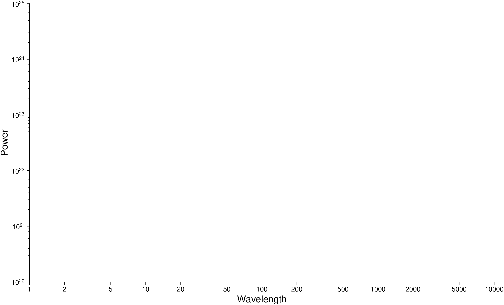
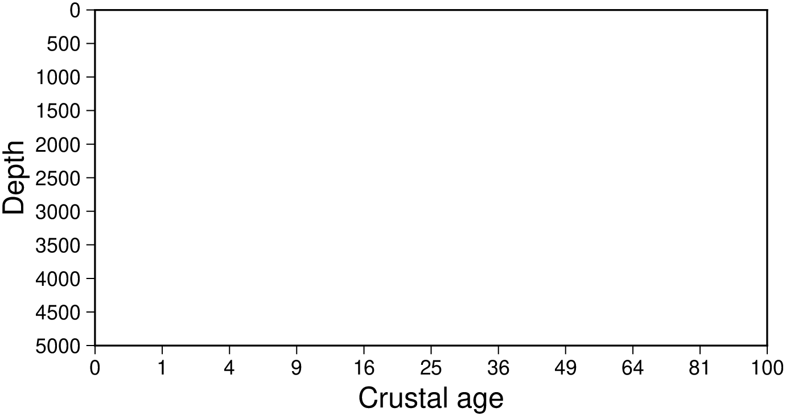
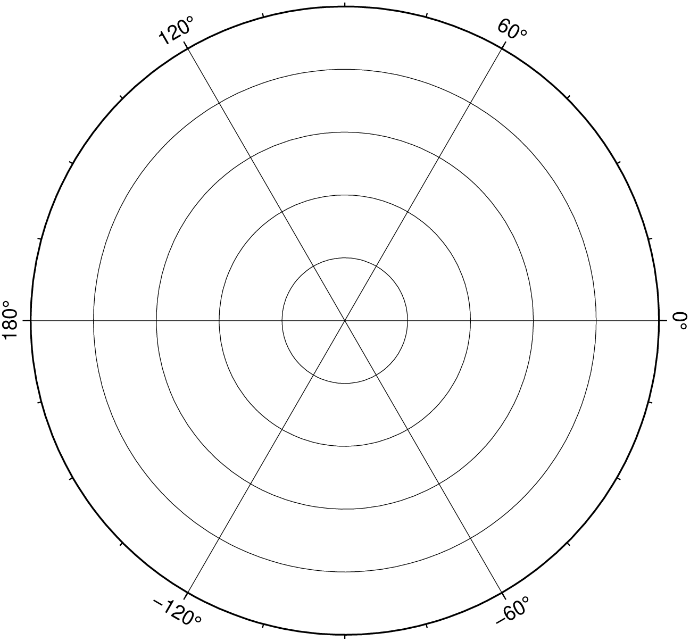

using GMT
basemap(region=(0,9,0,5), figscale=1,
frame=(axes=:WeSn, annot=2, ticks=1, xlabel=:Distance, ylabel="No of samples"), show=true)
basemap(; kwargs...)Plot base maps and frames
Creates a basic or fancy basemap with axes, fill, and titles. Several map projections are available, and the user may specify separate tick-mark intervals for boundary annotation, ticking, and (optionally) gridlines. A simple map scale (map_scale) or directional rose (rose) may also be plotted. At least one of the options [frame], map_scale, or rose must be specified.
J or proj or projection : – proj=
Select map projection. More at [proj](../common_opts/opt_J.html)
R or region or limits : – limits=(xmin, xmax, ymin, ymax) | limits=(BB=(xmin, xmax, ymin, ymax),) | limits=(LLUR=(xmin, xmax, ymin, ymax),units=“unit”) | …more
Specify the region of interest. More at [limits](../common_opts/opt_R.html). For perspective view view, optionally add zmin,zmax. This option may be used to indicate the range used for the 3-D axes. You may ask for a larger w/e/s/n region to have more room between the image and the axes.
A or polygon : polygon=true or polygon=fname
No plotting is performed. Instead, we determine the geographical coordinates of the polygon outline for the (possibly oblique) rectangular map domain. The plot domain must be given via [limits] and [proj], with no other options allowed. The sampling interval is controlled via MAP_LINE_STEP parameter. The coordinates are return in a GMTdataset or written to fname if a file name is specified.
B or axes or frame
Set map boundary frame and axes attributes. Default is to draw and annotate left, bottom and vertical axes and just draw left and top axes. More at [frame](../common_opts/opt_B.html)
F or box : – box=(clearance=gap, pen=pen, fill=fill, inner=(gap,pen), rounded=xx, shaded=(dx,dy[,shade]))
Without further options, draws a rectangular border around the map scale or rose using MAP_FRAME_PEN; specify a different pen with pen=new_pen. Add fill=fill_value to fill the logo box [no fill]. Append clearance=gap where gap is either a scalar, or tuples with (xgap, ygap), or (lgap,rgap,bgap,tgap) where these items are uniform, separate in x- and y-direction, or individual side spacings between logo and border. Append inner to draw a secondary, inner border as well. We use a uniform gap between borders of 2p and the MAP_DEFAULT_PEN unless other values are specified. Append rounded=6 to draw rounded rectangular borders instead, with a 6p corner radius. You can override this radius by appending another value. Finally, append shaded=(dx,dy[,shade]) to draw an offset background shaded region. Here, dx,dy indicates the shift relative to the foreground frame [4p,4p] and shade sets the fill style to use for shading [gray50]. Requires map_scale or rose. If both map_scale or rose, you may repeat box after each of these but remember to put repeated settings inside a tuple of tuples.
L or map_scale : – map_scale=([map=true, inside=true, norm=true, paper=true,] anchor=refpoint, scale_at_lat=lat, length=len [,align=side, justify=code, fancy=true, label=lab, offset=(dx,dy), units=unit, vertical=true])
Draws a simple map scale centered on the reference point specified using one of four coordinate systems: (1) Use map=true for map (user) coordinates, (2) use inner=code for setting refpoint via a 2-char justification code that refers to the (invisible) map domain rectangle, (3) use norm=true for normalized (0-1) coordinates, or (4) use paper=true for plot coordinates (inches, cm, etc.). Scale is calculated for latitude slat (optionally supply longitude slon for oblique projections [Default is central meridian]), length=len when len is in km, or append unit from e or f or k or M ot n or u. Change the label alignment with align=:left|:right|:top|:bottom. Use fancy=true to get a “fancy” scale [Default is plain]. By default, the anchor point on the map scale is assumed to be the center of the scale (MC), but this can be changed by adding justify=code, where code is a 2-char justification code (see [ ]{.quarto-shortcode__ data-is-shortcode=“1” data-raw=“{{< gmtref text >}}”} for list and explanation of codes). label=lab selects the default label, which equals the distance unit (meter, foot, km, mile, nautical mile, US survey foot) and is justified on top of the scale. Change this by giving your own label lab. Add offset=(dx,dy) to offset the map scale by dx,dy away from the anchor in the direction implied by justify. Select units=unit to append the unit to all distance annotations along the scale (for the plain scale, this will instead select the unit to be appended to the distance length). Cartesian projections: Origin scale_at_lat is not required, fancy is not allowed, and no units should be specified in length. You must set any Cartesian data units via label. For a vertical rather than horizontal Cartesian scale, append vertical=true. Note: Use [FONT_LABEL] to change the label font and [FONT_ANNOT_PRIMARY] to change the annotation font. The height of the map scale is controlled by [MAP_SCALE_HEIGHT], and the pen thickness is set by [MAP_TICK_PEN_PRIMARY]. See box on how to place a panel behind the scale.
Td or rose : – rose=([map=true, inside=true, outside=true, norm=true, paper=true,] anchor=refpoint, width=width [,justify=code, fancy=level, labels=labels, offset=(dx,dy)])
Draws a map directional rose on the map at the location defined by the reference and anchor points: Give the reference point on the map for the rose using one of four coordinate systems: (1) Use map=true for map (user) coordinates, (2) use inside=code for setting refpoint via a 2-char justification code that refers to the (invisible) map domain rectangle, (3) use norm=true for normalized (0-1) coordinates, or (4) use paper=true for plot coordinates (inches, cm, etc.). You can offset the reference point with offset=(dx,dy) in the direction implied by justify=code. By default, the anchor point is assumed to be the center of the rose (MC), but this can be changed by using justify=code where code is a 2-char justification code (see text for list and explanation of codes). Note: If outside=true is used then justify defaults to the same as refpoint, if outside=true is used then justify defaults to the mirror opposite of refpoint. Use width=width to set the width of the rose in plot coordinates (in inches, cm, or points). Add fancy=true to get a “fancy” rose, and specify in level what you want drawn. The default [1 or true] draws the two principal E-W, N-S orientations, 2 adds the two intermediate NW-SE and NE-SW orientations, while 3 adds the eight minor orientations WNW-ESE, NNW-SSE, NNE-SSW, and ENE-WSW. Label the cardinal points W,E,S,N by adding labels and append your own four comma-separated string to override the default. Skip a specific label by leaving it blank. See Placing-dir-map-roses and box on how to place a panel behind the scale.
Tm or compass : – compass=([map=true, inside=true, outside=true, norm=true, paper=true,] anchor=refpoint, width=width, [dec=(dec, dlabel), justify=code, labels=labels, rose_primary=pen, rose_secondary=pen, offset=(dx,dy)])
Draws a map magnetic rose on the map at the location defined by the reference and anchor points: Give the reference point on the map for the rose using one of four coordinate systems: (1) Use map=true for map (user) coordinates, (2) use inner=code for setting refpoint via a 2-char justification code that refers to the (invisible) map domain rectangle, (3) use norm=true for normalized (0-1) coordinates, or (4) use paper=true for plot coordinates (inches, cm, etc.). You can offset the reference point with offset=(dx,dy) in the direction implied by justify=code. By default, the anchor point is assumed to be the center of the rose (MC), but this can be changed by using justify=code where code is a 2-char justification code (see text for list and explanation of codes). Note: If outside=true is used then justify defaults to the same as refpoint, if outside=true is used then justify defaults to the mirror opposite of refpoint. Use width=width to set the width of the rose in plot coordinates (in inches, cm, or points). Use dec=dec to assign the magnetic declination or dec=(dec, dlabel) to set dlabel, which is a label for the magnetic compass needle (use “-” as dlabel to bypass labeling). With dec, both directions to geographic and magnetic north are plotted [Default is geographic only]. If the north label is a star * as in dec=(1,“W,E,S,*”) then a north star is plotted instead of the north label. Annotation and two levels of tick intervals for both geographic and magnetic directions default to 30/5/1 degrees; override these settings by appending annot=(…,…,.), and enter six intervals to set both the geographic (first three) and magnetic (last three) intervals. Label the cardinal points W,E,S,N by adding label=lab where lab is your own four comma-separated string to override the default. Skip a specific label by leaving it blank. The rose_primary=pen and rose_secondary=pen modify the pens used to plot the outter and inner circles of the comapss. A number GMT default parameters control pens, fonts, and color. See Placing-dir-map-roses and box on how to place a panel behind the scale.
U or time_stamp : – time_stamp=true | time_stamp=(just=“code”, pos=(dx,dy), label=“label”, com=true)
Draw GMT time stamp logo on plot. More at [timestamp](../common_opts/opt_U.html)
V or verbose : – verbose=true | verbose=level
Select verbosity level. More at [verbose](../common_opts/opt_V.html)
X or xshift or x_offset : xshift=true | xshift=x-shift | xshift=(shift=x-shift, mov=“a|c|f|r”)
Shift plot origin. More at [xshift](../common_opts/opt_X.html)
Y or yshift or y_offset : yshift=true | yshift=y-shift | yshift=(shift=y-shift, mov=“a|c|f|r”)
Shift plot origin. More at [yshift](../common_opts/opt_Y.html)
f or colinfo : – colinfo=??
Specify the data types of input and/or output columns (time or geographical data). More at
p or view or perspective : – view=(azim, elev)
Default is viewpoint from an azimuth of 200 and elevation of 30 degrees.
Specify the viewpoint in terms of azimuth and elevation. The azimuth is the horizontal rotation about the z-axis as measured in degrees from the positive y-axis. That is, from North. This option is not yet fully expanded. Current alternatives are:
bar3!) More at [perspective](../common_opts/opt_p.html)t or transparency or alpha: – alpha=50
Set PDF transparency level for an overlay, in (0-100] percent range. [Default is 0, i.e., opaque]. Works only for the PDF and PNG formats.
The following section illustrates the use of the options by giving some examples for the available map projections. Note how scales may be given in several different ways depending on the projection. Also note the use of upper case letters to specify map width instead of map scale.
WARNING: the examples have not yet been translated to GMT.jl
To make a linear x/y frame with all axes, but with only left and bottom axes annotated, using xscale = yscale = 1 cm per unit, ticking every 1 unit and annotating every 2, and using xlabel = “Distance” and ylabel = “No of samples”, use
using GMT
basemap(region=(0,9,0,5), figscale=1,
frame=(axes=:WeSn, annot=2, ticks=1, xlabel=:Distance, ylabel="No of samples"), show=true)
To make a log-log frame with only the left and bottom axes, where the x-axis is 25 cm and annotated every 1-2-5 and the y-axis is 15 cm and annotated every power of 10 but has tick-marks every 0.1, run
using GMT
basemap(region=(1,10000,1e20,1e25), figsize=(25,15), proj=:logxy, frame=(axes=:WS,),
xaxis=(annot=2, label=:Wavelength),
yaxis=(annot=1, ticks=3, label=:Power, scale=:pow), show=1)
To design an axis system to be used for a depth-sqrt(age) plot with depth positive down, ticked and annotated every 500m, and ages (in millions of years) annotated at 1 My, 4 My, 9 My etc., use
using GMT
# This still fails to generate the intended GMT command. (maybe let scale="pow0.5")
#basemap(region=(0,100,0,5000), figscale=(1,-0.001), xaxis=(annot=1, label="Crustal age", scale=:pow), yaxis=(annot=500, label=:Depth), show=true)
basemap(region=(0,100,0,5000), frame="x1p+l\"Crustal age\" y500+lDepth", proj="x1cp0.5/-0.001c", show=true)
For a base map for use with polar coordinates, where the radius from 0 to 1000 should correspond to 5 cm and with gridlines and ticks intervals automatically determined, use
using GMT
basemap(region=(0,360,0,1000), figsize=10, frame=:afg, proj=:polar, show=true)
A 10-cm-wide basemap using the Cassini projection may be obtained by
gmt basemap -R20/50/20/35 -JC35/28/10c -Bafg -B+tCassiniA Mercator map with scale 0.025 inch/degree along equator, and showing the length of 5000 km along the equator (centered on 1/1 inch), may be plotted as
gmt basemap -R90/180/-50/50 -Jm0.025i -Bafg -B+tMercator -Lx1i/1i+c0+w5000kA global Miller cylindrical map with scale 1:200,000,000 may be plotted as
gmt basemap -Rg -Jj180/1:200000000 -Bafg -B+tMillerTo create a page-size global oblique Mercator basemap for a pole at (90,30) with gridlines every 30 degrees, run
gmt basemap -R0/360/-70/70 -Joc0/0/90/30/0.064cd -B30g30 -B+t"Oblique Mercator"A regular Transverse Mercator basemap for some region may look like
gmt basemap -R69:30/71:45/-17/-15:15 -Jt70/1:1000000 -Bafg -B+t"Survey area"This projection only needs the central meridian and scale. A 25 cm wide global basemap centered on the 130E meridian is made by
gmt basemap -R-50/310/-90/90 -JQ130/25c -Bafg -B+t"Equidistant Cylindrical"To use this projection you must know the UTM zone number, which defines the central meridian. A UTM basemap for Indo-China can be plotted as
gmt basemap -R95/5/108/20+r -Ju46/1:10000000 -Bafg -B+tUTMFirst select which of the cylindrical equal-area projections you want by deciding on the standard parallel. Here we will use 45 degrees which gives the Gall projection. A 9 inch wide global basemap centered on the Pacific is made by
gmt basemap -Rg -JY180/45/9i -Bafg -B+tGallA basemap for middle Europe may be created by
gmt basemap -R0/90/25/55 -Jb45/20/32/45/0.25c -Bafg -B+t"Albers Equal-area"Another basemap for middle Europe may be created by
gmt basemap -R0/90/25/55 -Jl45/20/32/45/0.1i -Bafg -B+t"Lambert Conformal Conic"Yet another basemap of width 6 inch for middle Europe may be created by
gmt basemap -R0/90/25/55 -JD45/20/32/45/6i -Bafg -B+t"Equidistant conic"A basemap for north America may be created by
gmt basemap -R-180/-20/0/90 -JPoly/4i -Bafg -B+tPolyconicA 15-cm-wide global view of the world from the vantage point -80/-30 will give the following basemap:
basemap -Rg -JA-80/-30/15c -Bafg -B+t"Lambert Azimuthal"Follow the instructions for stereographic projection if you want to impose rectangular boundaries on the azimuthal equal-area map but substitute [proj] a for [proj] s.
A 15-cm-wide global map in which distances from the center (here 125/10) to any point is true can be obtained by:
gmt basemap -Rg -JE125/10/15c -Bafg -B+tEquidistantA view of the world from the vantage point -100/40 out to a horizon of 60 degrees from the center can be made using the Gnomonic projection:
gmt basemap -Rg -JF-100/40/60/6i -Bafg -B+tGnomonicA global perspective (from infinite distance) view of the world from the vantage point 125/10 will give the following 6-inch-wide basemap:
gmt basemap -Rg -JG125/10/6i -Bafg -B+tOrthographicThe [proj] G option can be used in a more generalized form, specifying altitude above the surface, width and height of the view point, and twist and tilt. A view from 160 km above -74/41.5 with a tilt of 55 and azimuth of 210 degrees, and limiting the viewpoint to 30 degrees width and height will product a 6-inch-wide basemap:
gmt basemap -Rg -JG-74/41.5/6i+z160+a210+t55+v30 -Bafg -B+t"General Perspective"To make a polar stereographic projection basemap with radius = 12 cm to -60 degree latitude, with plot title “Salinity measurements”, using 5 degrees annotation/tick interval and 1 degree gridlines, run
gmt basemap -R-45/45/-90/-60 -Js0/-90/12c/-60 -B5g1 -B+t"Salinity measurements"To make a 12-cm-wide stereographic basemap for Australia from an arbitrary view point (not the poles), and use a rectangular boundary, we must give the pole for the new projection and use the [limits] option to indicate the lower left and upper right corners (in lon/lat) that will define our rectangle. We choose a pole at 130/-30 and use 100/-45 and 160/-5 as our corners. The command becomes
gmt basemap -R100/-45/160/-5+r -JS130/-30/12c -Bafg -B+t"General Stereographic View"The Hammer projection is mostly used for global maps and thus the spherical form is used. To get a world map centered on Greenwich at a scale of 1:200000000, use
gmt basemap -Rd -Jh0/1:200000000 -Bafg -B+tHammerTo make a sinusoidal world map centered on Greenwich, with a scale along the equator of 0.02 inch/degree, use
gmt basemap -Rd -Ji0/0.02i -Bafg -B+tSinusoidalTo make an interrupted sinusoidal world map with breaks at 160W, 20W, and 60E, with a scale along the equator of 0.02 inch/degree, run the following sequence of commands:
gmt begin
gmt basemap -R-160/-20/-90/90 -Ji-90/0.02i -Bx30g30 -By15g15 -BWesn
gmt basemap -Bx30g30 -By15g15 -Bwesn -X2.8i
gmt basemap -Bx30g30 -By15g15 -BwEsn -X1.6i
gmt end showPseudo-cylindrical projection typically used for global maps only. Set the central longitude and scale, e.g.,
gmt basemap -Rg -Jkf180/0.064c -Bafg -B+t"Eckert IV"Another pseudo-cylindrical projection typically used for global maps only. Set the central longitude and scale, e.g.,
gmt basemap -Rg -Jks180/0.064c -Bafg -B+t"Eckert VI"Projection designed to make global maps “look right”. Set the central longitude and width, e.g.,
gmt basemap -Rd -JN0/8i -Bafg -B+tRobinsonYet another projection typically used for global maps only. You can set the central longitude, e.g.,
gmt basemap -R90/450/-90/90 -JR270/25c -Bafg -B+t"Winkel Tripel"The Mollweide projection is also mostly used for global maps and thus the spherical form is used. To get a 25-cm-wide world map centered on the Dateline:
gmt basemap -Rg -JW180/25c -Bafg -B+tMollweideThe Van der Grinten projection is also mostly used for global maps and thus the spherical form is used. To get a 18-cm-wide world map centered on the Dateline:
gmt basemap -Rg -JV180/18c -Bafg -B+t"Van der Grinten"If you need to plot a map but have it rotated about a vertical axis then use the |-p| option. For instance, to rotate the basemap below 90 degrees about an axis centered on the map, try
gmt basemap -R10/40/10/40 -JM10c -Bafg -B+t"I am rotated" -p90+w25/25 -XcThe [frame] option sets up a regular annotation interval and the annotations derive from the corresponding x, y, or z coordinates. However, some applications requires special control on which annotations to plot and even replace the annotation with other labels. This is achieved by using c intfile in the [frame] option, where intfile contains all the information about annotations, ticks, and even gridlines. Each record is of the form coord type [label], where coord is the coordinate for this annotation (or tick or gridline), type is one or more letters from a (annotation), i interval annotation, f tickmark, and g gridline. Note that a and i are mutually exclusive and cannot both appear in the same intfile. Both a and i requires you to supply a label which is used as the plot annotation. If not given then a regular formatted annotation based on the coordinate will occur.
For some projections, a spherical earth is implicitly assumed. A warning will notify the user if verbose is set.
The [frame] option is somewhat complicated to explain and comprehend. However, it is fairly simple for most applications (see examples).